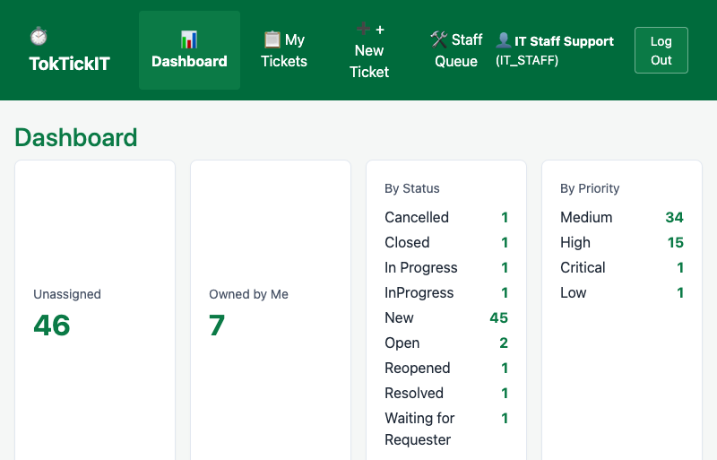
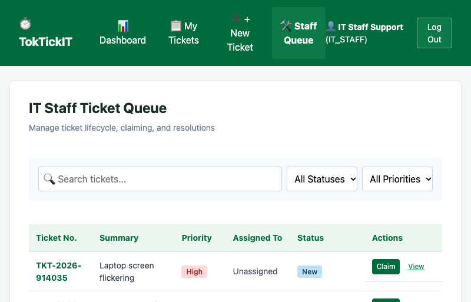
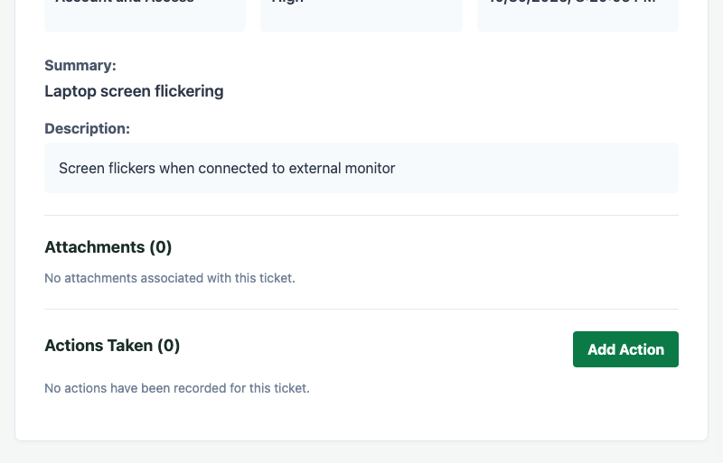
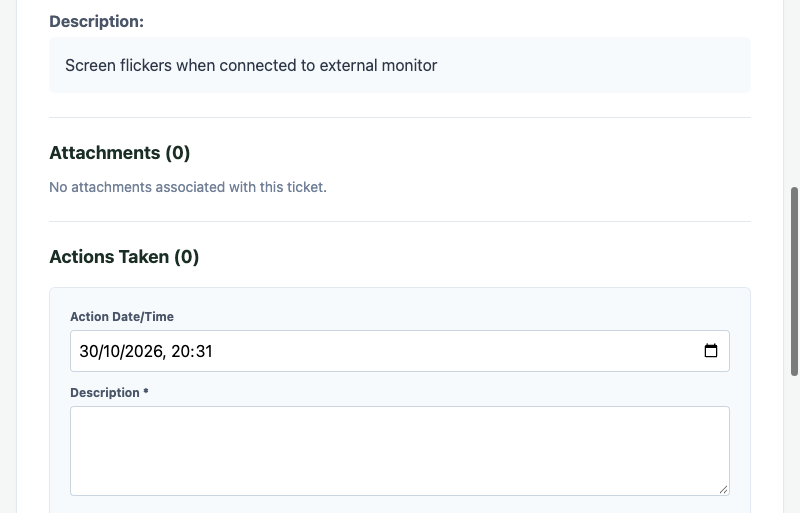
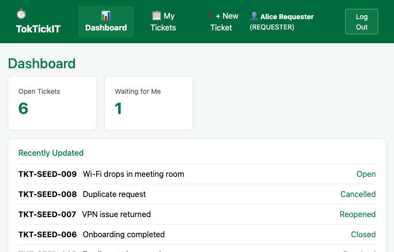
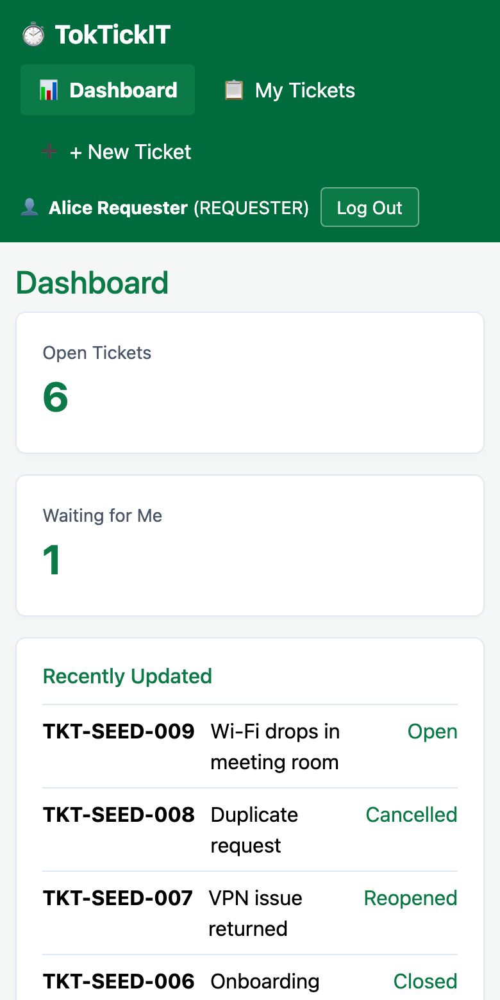

Student: Yoswat Amornvitkijvecha — 67070503494 — [Section] / Semester: 1/2026
Peer Reviewer: Punnapob Wirojwongchai — 67070503425 — SaintCrois
GitHub Repository: https://github.com/Decaa0/toktickit
Every feature was isolated in a dedicated branch, peer-reviewed via pull request, approved by the peer reviewer, and merged into lab4-staging before final integration into main.
| Issue | Scope | Pull Request |
|---|---|---|
| #44 | Issue 4.1: Sprint 4 Engineering Contract & Specifications | https://github.com/Decaa0/toktickit/pull/56 |
| #45 | Issue 4.2: Actions Taken foundation (model, migration, seed, API) | https://github.com/Decaa0/toktickit/pull/57 |
| #47 | Issue 4.4: Ticket workflow & resolution gate | https://github.com/Decaa0/toktickit/pull/58 |
| #48 | Issue 4.5: Role dashboards (Requester & IT Staff) | https://github.com/Decaa0/toktickit/pull/59 |
| #46 | Issue 4.3: Actions Taken UI | https://github.com/Decaa0/toktickit/pull/60 |
| #49 | Issue 4.6: Responsive fix & final hardening | https://github.com/Decaa0/toktickit/pull/61 |
All six pull requests were approved and merged by the peer reviewer (SaintCrois). Rendered reviewer record: docs/lab-04/reviewer.md. README, .gitignore, and the repository structure are current on main.
Rendered: docs/lab-04/specification.md. Includes numbered Functional Requirements (FR-01+), Business Rules (BR-01+), the complete Ticket status-transition matrix (BR-09), the IT-Staff resolution gate (BR-08), dashboard calculation rules (BR-10), two justified database-design decisions, Acceptance Criteria (AC-01+), and the Product Definition of Done. The specification was committed (PR #56) before the implementation pull requests, evidencing specification-before-code.
Rendered: docs/lab-04/tests.md — planned tests and a traceability matrix mapping each Acceptance Criterion to its automated test file. Passing suites on main:
server: Test Files 13 passed (13) Tests 46 passed (46) client: Test Files 10 passed (10) Tests 18 passed | 2 todo (20) tsc --noEmit: clean vite build: OK
Rendered: docs/lab-04/ai-use.md — the LLM tools used, 8 selected key engineering prompts with their verifications, and a brief reflection on specification-agent and coding-agent use.
Backend GET /api/dashboard/staff returns unassigned, owned-by-me, by-status, by-priority, and recently-updated metrics computed from authoritative data (verified in staff-dashboard.api.test.ts). Metric cards drill through to the Staff Queue.


Endpoints GET/POST/PATCH /api/tickets/:id/actions enforce authorization on the backend (IT Staff/Administrator write; Requester reads only owned tickets) and require a follow-up note when follow-up is flagged. The UI supports a list, create and edit modes, a duplicate-submit guard, and read-only display for Requesters.


The backend enforces the full eight-status transition matrix (New, Open, In Progress, Waiting for Requester, Resolved, Closed, Reopened, Cancelled). Illegal transitions return 400; stale updates return 409; a Requester "appears resolved" indication is advisory and never sets the ticket to Resolved. Verified in ticket-workflow.api.test.ts. Status controls in the Ticket Queue (above) expose only permitted transitions.
The Requester dashboard (GET /api/dashboard/requester) is owner-scoped: total open, waiting-for-me, recently updated, and recently resolved — ownership enforced on the backend (verified in requester-dashboard.api.test.ts). All Lab 1–3 suites continue to pass on main, confirming preserved authentication, My Tickets, Ticket Detail, attachments, IT Staff functions, and administrator user management.

Rendered: docs/lab-04/ui-spec.md. Root-cause fix for the mobile defect: the application previously served a stale compiled App.js, so edits to App.tsx never shipped; main.tsx and the tests now load App.tsx, and tsconfig noEmit:true prevents re-emitting the compiled files. Responsive styles add breakpoints at 768px and 1024px, a wrapping navigation bar, stacked cards, full-width inputs (16px to prevent iOS zoom), and visible focus outlines; no horizontal page scroll remains.

The submitted repository and final main branch remain the source of truth.